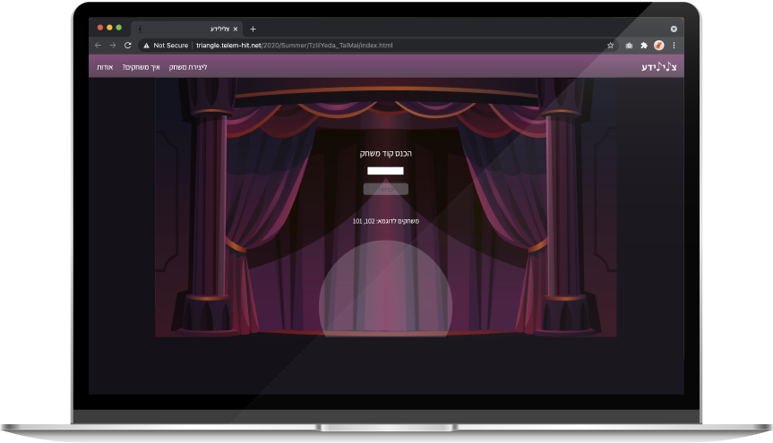
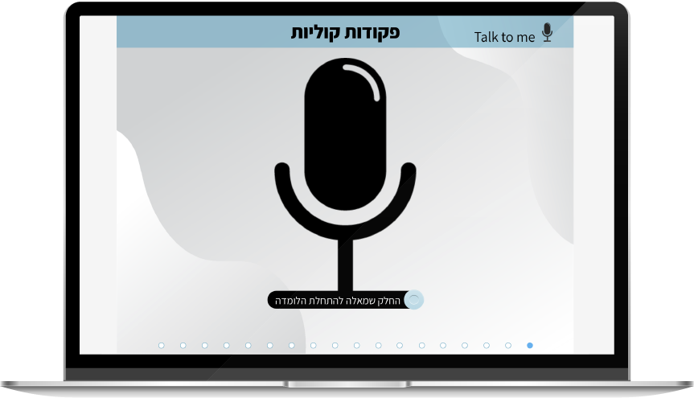
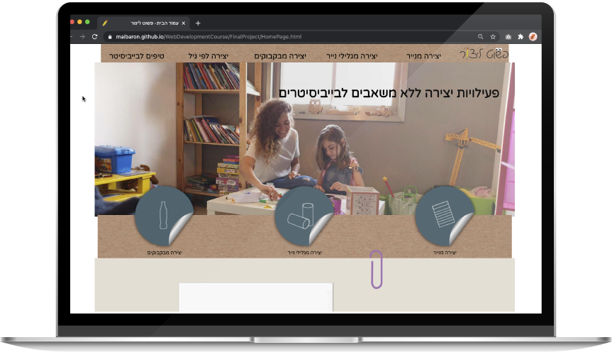
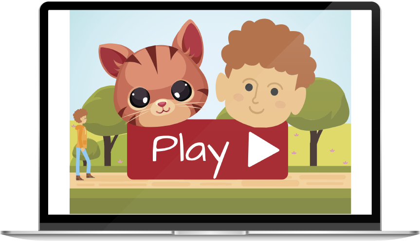

Tzlileyeda
Educational Game Generator
"Tzlileyeda" is a platform used to create and play educational games. The platform includes an
editor
interface, where the editor can
create new games and edit questions. Then, in the game the players need to create a piano melody
by
clicking the piano keys containing the correct answers.

Talk To Me
Interactive E-learning
"Talk To Me" is an interactive E-learning where users can learn how to use vocal orders in order
to
use
their phones.

Simply Create
Informative Website
"Simply Create" is a Website targeting babysitters and children's tutors that bundles simple
creative
activities that don't require extra resources other than products that you can find in every
home.

Striper the Kitty
Animated Video
"Striper the Kitty" is a fun animated video I created for school project.

Maridim
Responsive-Community based website for people who have Essential Tremor in Israel
The website contains 4 main sections that evolved from the needs of those with Essential Tremor in Israel:
- Home page- contains a section that allows the users to share posters in order to raise awareness of Essential Tremor in Israel,
simple definiton of Essential Tremor, curation of videos and a section where they can sign up to participate in future studies.
- Forum- Allows the users to share information, ask for advice or make new connections with people alike.
- Tips- Allows the users to simply share a short tip for easier data consumption.
- Important Info- This page contains more thorough and deepened information for those with Essential Tremor, such as: Information about assistive Technologies, Treatment options, curation of articles and studies about the condition, and an Interactive map presenting all the movment disorder clinics around the country.